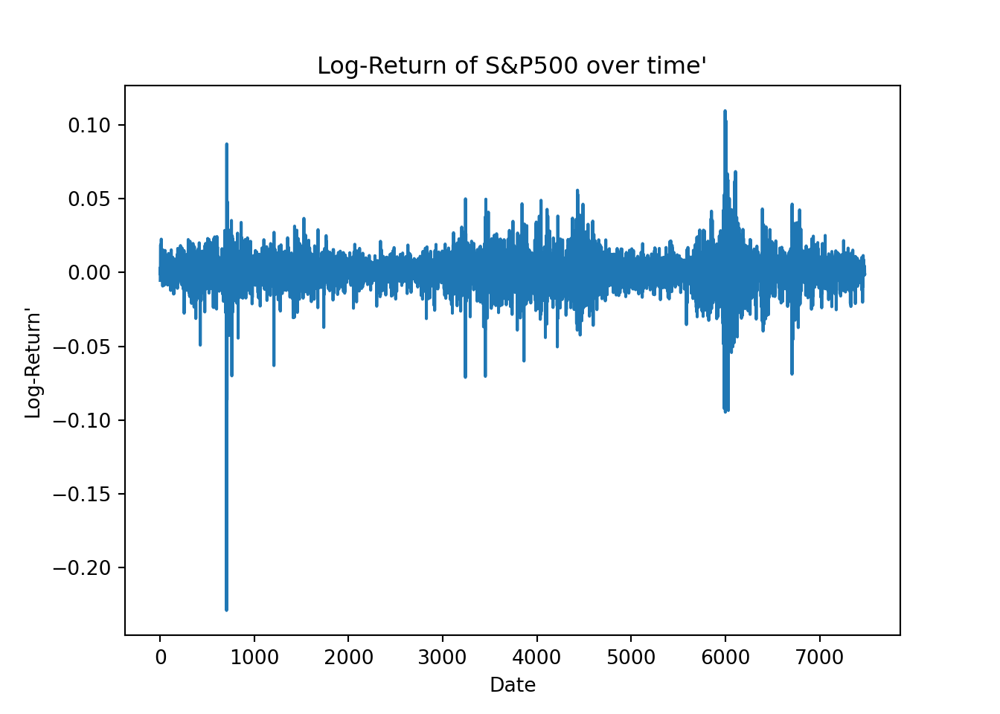
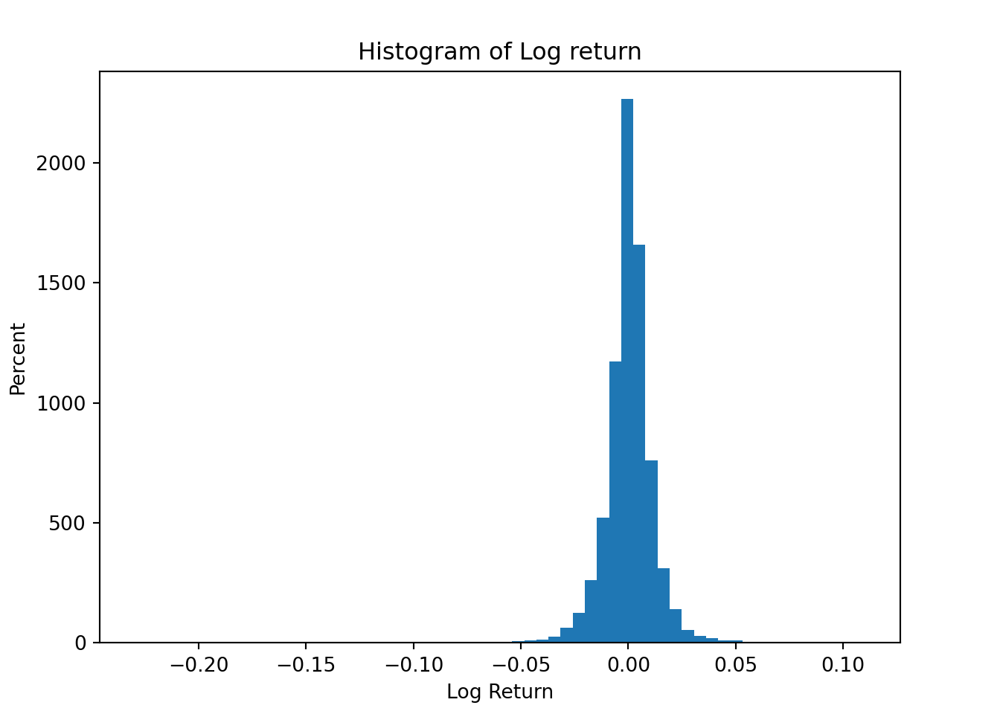
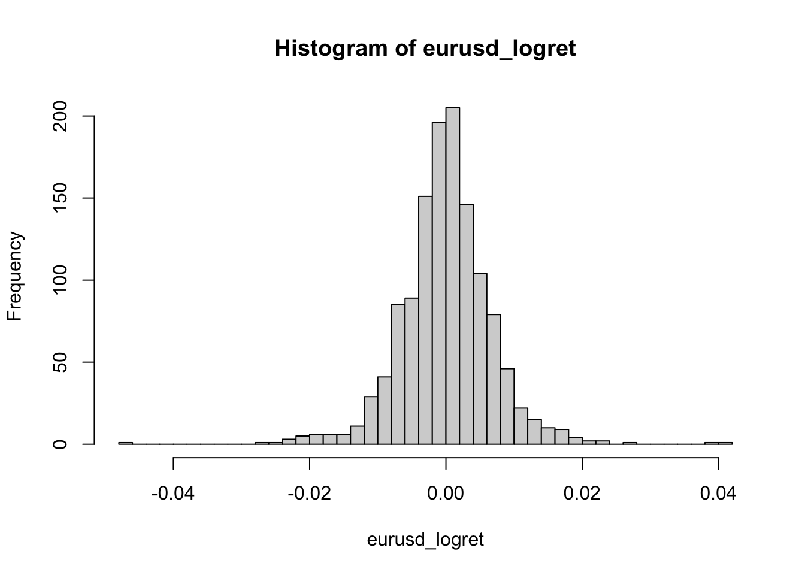
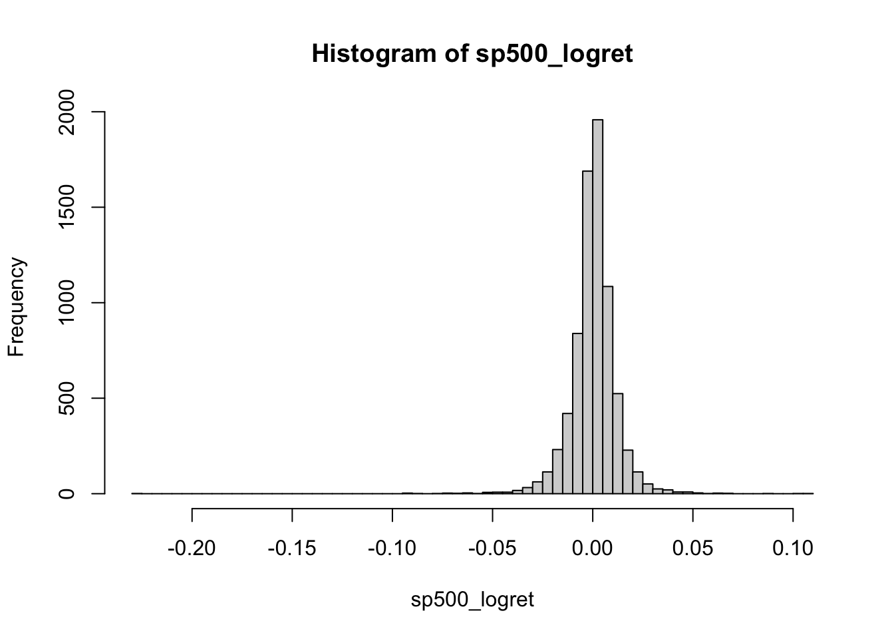
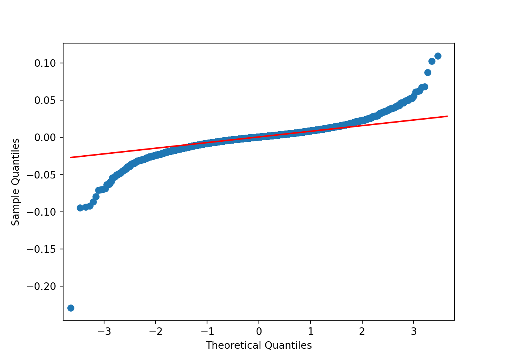
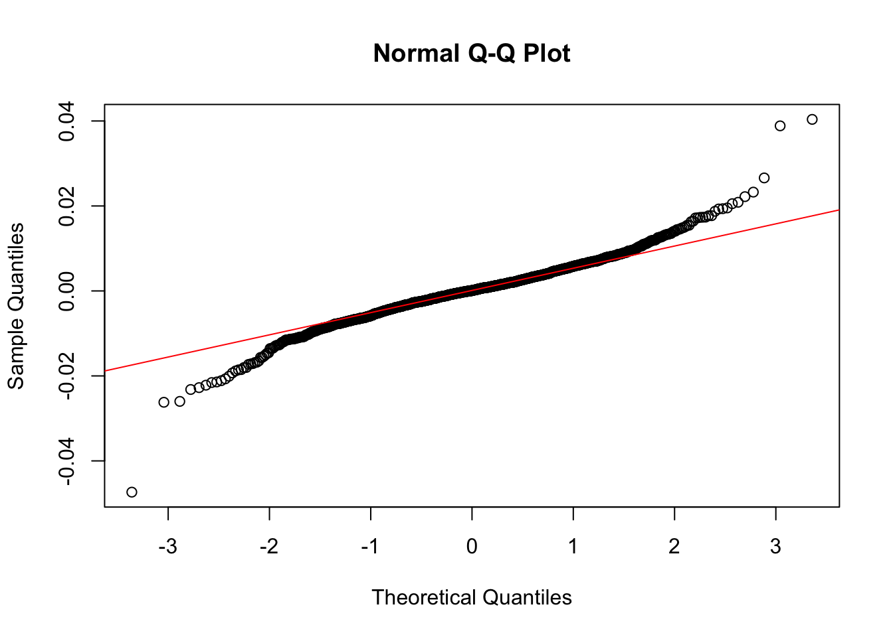
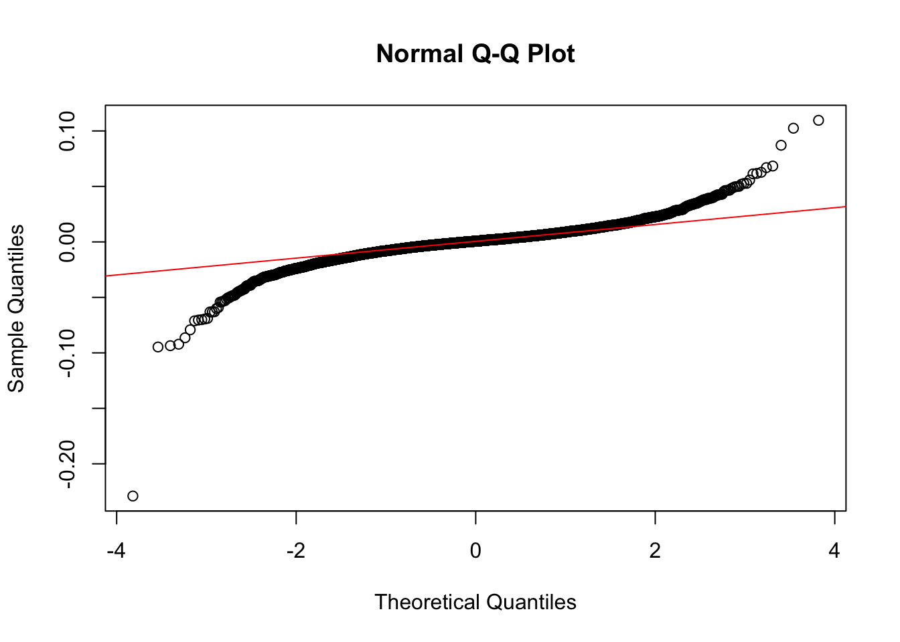

Chapter 8 In-class exercise
8.1 Dailly log-return
Suppose that the daily log-return on a stock are independent and normally distributed with mean \(0.001\) and standard deviation \(0.015\). Suppose you buy \(1000\$\) worth of this stock.
- What is the prbability that after one trading day your investment is worth less than \(990\$\)?
Let \(\mathcal{P}_1\) be the probability that after one trading day the investment is worth and \(X\) be standard normal random variable.
The daily log-return on a stock are independent and normally distributed with mean \(0.001\) and standard deviation \(0.015\): \(r_t=\ln \left( \frac{P_t}{P_{t-1}} \right) \sim \mathcal{N}(0.001,0.015)\).
\[\begin{align*} \mathcal{P}_1&=\mathcal{P}(1000P_t \leq 990 P_{t-1}) \\ &=\mathcal{P} \left(r_t \leq \ln \left( \frac{990}{1000} \right) \right) \\ &=\mathcal{P} \left(\frac{r_t-0.001}{0.015} \leq \frac{\ln\left( \frac{990}{1000} \right)-0.001}{0.015} \right) \\ &=\mathcal{P} \left(X \leq -0.7366 \right) \\ &=0.23066 \end{align*}\]
Answer: The probability that after one trading day the investment is worth less than 990$ is \(23.066\%\).
- What is the probability that after five trading days your investment is worth less than \(990\$\)?
Let \(\mathcal{P}_5\) be the probability that after five trading day the investment is worth.
The five day log-return on a stock are independent and normally distributed with mean \(0.001 \cdot 5\) and standard deviation \(0.015 \cdot \sqrt{5}\): \(r_t=\ln \left( \frac{P_t}{P_{t-1}} \right) \sim \mathcal{N}(0.001 \cdot 5,0.015 \cdot \sqrt{5})\).
\[\begin{align*} \mathcal{P}_5&=\mathcal{P}(1000P_t \leq 990 P_{t-5}) \\ &=\mathcal{P} \left(r_t \leq \ln \left( \frac{990}{1000} \right) \right) \\ &=\mathcal{P} \left(\frac{r_t-0.001 \cdot 5}{0.015 \cdot \sqrt{5}} \leq \frac{\ln\left( \frac{990}{1000} \right)-0.001 \cdot 5}{0.015 \cdot \sqrt{5}} \right) \\ &=\mathcal{P} \left(X \leq -0.4487 \right) \\ &=0.32682 \end{align*}\]
Answer: The probability that after five trading day the investment is worth less than \(990\$\) is \(32.68\%\).
8.2 Skewness & Kurtosis
Calculate skewness and kurtosis of the following density function
\[f(x) =\begin{cases} \frac{3}{8}x^2 & \text{for } 0<x<2\\ 0 & \text{otherwise} \end{cases}\]
\[\begin{align*} \mu_1&=\mathbb{E}[X] \\ &=\int_{0}^{2}x \cdot \frac{3}{8}x^2\,dx \\ &=\frac{3}{2} \\ \\ \mu_2&=\mathbb{E}[X^2] \\ &=\int_{0}^{2}x^2 \cdot \frac{3}{8}x^2\,dx \\ &=\frac{12}{5} \end{align*}\]
\[\begin{align*} Sk&=\frac{\mathbb{E}[(X-\mu_1)^3]}{\sigma^3} \\ &=\frac{\int_{0}^{2}(x-\mu_1)^3 \cdot \frac{3}{8}x^2\,dx}{(\mu_2-\mu_1^2)^{3/2}} \\ &=\frac{\int_{0}^{2}(x-\frac{3}{2})^3 \cdot \frac{3}{8}x^2\,dx}{\left[ \frac{12}{5}-\left( \frac{3}{2} \right)^2 \right]^{3/2}} \\ &=-0.86 \\ \\ Kur&=\frac{\mathbb{E}[(X-\mu_1)^4]}{\sigma^4} \\ &=\frac{\int_{0}^{2}(x-\mu_1)^4 \cdot \frac{3}{8}x^2\,dx}{(\mu_2-\mu_1^2)^{4/2}} \\ &=\frac{\int_{0}^{2}(x-\frac{3}{2})^4 \cdot \frac{3}{8}x^2\,dx}{\left[ \frac{12}{5}-\left( \frac{3}{2} \right)^2 \right]^{4/2}} \\ &=3.10 \end{align*}\]
Answer: skewness is \(-0.86\) and kurtosis is \(3.10\).
Python
- Calculate skewness and kurtosis of the log return of the exchange rate of EURO to USD.
import numpy as np
import pandas as pd
# Import and calculate log return
eurusd_url='https://docs.google.com/spreadsheets/d/e/2PACX-1vT4WqdVoUIiaMcd4jQj5by3Oauc6G4EFq9VDDrpzG2oBn6TFzyNE1yPV2fKRal5F7DmRzCtVa4nSQIw/pub?gid=0&single=true&output=csv'
eurusd=pd.read_csv(eurusd_url)
eurusd.head()#> Date USD per euro
#> 0 27/07/2005 1.1990
#> 1 28/07/2005 1.2100
#> 2 29/07/2005 1.2093
#> 3 01/08/2005 1.2219
#> 4 02/08/2005 1.2217eurusd_logret = np.log(eurusd['USD per euro']) - np.log(eurusd['USD per euro'].shift(1))
eurusd_logret[:6]#> 0 NaN
#> 1 0.009132
#> 2 -0.000579
#> 3 0.010365
#> 4 -0.000164
#> 5 0.007421
#> Name: USD per euro, dtype: float64import matplotlib.pyplot as plt
# Exploratory
eurusd_logret.plot()
plt.xlabel("Date")
plt.ylabel("Log-Return'")
plt.title("Log-Return of Exchange Rate over time'")
plt.show()
import matplotlib.pyplot as plt
fig = plt.figure()
ax1 = fig.add_axes([0.1,0.1,0.8,0.8])
eurusd_logret.plot.hist(bins = 60)
ax1.set_xlabel("Log Return")
ax1.set_ylabel("Percent")
ax1.set_title("Histogram of Log return")
plt.show()
import pandas as pd
eurusd_logret.skew()#> -0.07336059594162114eurusd_logret.kurtosis()#> 4.66844649461392- Calculate skewness and kurtosis of the log return of the exchange rate of S&P500.
import numpy as np
import pandas as pd
sp500_url='https://docs.google.com/spreadsheets/d/e/2PACX-1vT4WqdVoUIiaMcd4jQj5by3Oauc6G4EFq9VDDrpzG2oBn6TFzyNE1yPV2fKRal5F7DmRzCtVa4nSQIw/pub?gid=279168786&single=true&output=csv'
sp500=pd.read_csv(sp500_url)
sp500.head()#> Date Open High Low Close Volume Adj Close
#> 0 01/03/1985 165.37 166.11 164.38 164.57 88880000 164.57
#> 1 01/04/1985 164.55 164.55 163.36 163.68 77480000 163.68
#> 2 01/07/1985 163.68 164.71 163.68 164.24 86190000 164.24
#> 3 01/08/1985 164.24 164.59 163.91 163.99 92110000 163.99
#> 4 01/09/1985 163.99 165.57 163.99 165.18 99230000 165.18sp500_logret = np.log(sp500['Close']) - np.log(sp500['Close'].shift(1))
sp500_logret[:6]#> 0 NaN
#> 1 -0.005423
#> 2 0.003415
#> 3 -0.001523
#> 4 0.007230
#> 5 0.018772
#> Name: Close, dtype: float64import matplotlib.pyplot as plt
sp500_logret.plot()
plt.xlabel("Date")
plt.ylabel("Log-Return'")
plt.title("Log-Return of S&P500 over time'")
plt.show()
import matplotlib.pyplot as plt
fig = plt.figure()
ax1 = fig.add_axes([0.1,0.1,0.8,0.8])
sp500_logret.plot.hist(bins = 60)
ax1.set_xlabel("Log Return")
ax1.set_ylabel("Percent")
ax1.set_title("Histogram of Log return")
plt.show()
import pandas as pd
sp500_logret.skew()#> -1.2989867430563735sp500_logret.kurtosis()#> 28.28091194470013R
- Calculate skewness and kurtosis of the log return of the exchange rate of EURO to USD.
library(tidyverse)
library(moments)
# Import and calculate log return
eurusd_url="https://docs.google.com/spreadsheets/d/e/2PACX-1vT4WqdVoUIiaMcd4jQj5by3Oauc6G4EFq9VDDrpzG2oBn6TFzyNE1yPV2fKRal5F7DmRzCtVa4nSQIw/pub?gid=0&single=true&output=csv"
eurusd=read.csv(eurusd_url)
head(eurusd)#> Date USD.per.euro
#> 1 27/07/2005 1.1990
#> 2 28/07/2005 1.2100
#> 3 29/07/2005 1.2093
#> 4 01/08/2005 1.2219
#> 5 02/08/2005 1.2217
#> 6 03/08/2005 1.2308eurusd_logret=eurusd[,2] %>%
log %>%
diff
head(eurusd_logret)#> [1] 0.0091324836 -0.0005786798 0.0103653445 -0.0001636929 0.0074210330
#> [6] 0.0008933285plot(eurusd_logret,type="l")
hist(eurusd_logret,breaks=60)
library(e1071)
skewness(eurusd_logret)#> [1] -0.07318848
#> attr(,"method")
#> [1] "moment"kurtosis(eurusd_logret)#> [1] 4.633551
#> attr(,"method")
#> [1] "excess"- Calculate skewness and kurtosis of the log return of the exchange rate of S&P500.
library(tidyverse)
library(moments)
# Import and calculate log return
sp500_url="https://docs.google.com/spreadsheets/d/e/2PACX-1vT4WqdVoUIiaMcd4jQj5by3Oauc6G4EFq9VDDrpzG2oBn6TFzyNE1yPV2fKRal5F7DmRzCtVa4nSQIw/pub?gid=279168786&single=true&output=csv"
sp500=read.csv(sp500_url)
head(sp500)#> Date Open High Low Close Volume Adj.Close
#> 1 01/03/1985 165.37 166.11 164.38 164.57 88880000 164.57
#> 2 01/04/1985 164.55 164.55 163.36 163.68 77480000 163.68
#> 3 01/07/1985 163.68 164.71 163.68 164.24 86190000 164.24
#> 4 01/08/1985 164.24 164.59 163.91 163.99 92110000 163.99
#> 5 01/09/1985 163.99 165.57 163.99 165.18 99230000 165.18
#> 6 1/10/1985 165.18 168.31 164.99 168.31 124700000 168.31sp500_logret= sp500$Adj.Close %>%
log %>%
diff
head(sp500_logret)#> [1] -0.005422709 0.003415471 -0.001523322 0.007230338 0.018771729
#> [6] -0.002379396plot(sp500_logret,type="l")
hist(sp500_logret,breaks=60)
library(e1071)
skewness(sp500_logret)#> [1] -1.298466
#> attr(,"method")
#> [1] "moment"kurtosis(sp500_logret)#> [1] 28.25285
#> attr(,"method")
#> [1] "excess"8.3 The Jarque-Bera (JB) tests
Python
- Check if the data of the log return of the exchange rate of Euro to USD follow the normal distribution.
import scipy.stats as stats
print(stats.jarque_bera(eurusd_logret[1:]),stats.kstest(eurusd_logret[1:],'norm'))#> Jarque_beraResult(statistic=1150.3195976112938, pvalue=0.0) KstestResult(statistic=0.48876441843556134, pvalue=5.961875332718074e-282)\(p-value<0.05\) so we can reject the null hypothesis \(H_0: Sk=0 \text{ and } Kur=3\) meaning that the log return of exchange rate of EURUSD do not follow the normal distribution.
- Check if the data of the log return of exchange rate of S&P500 follow the normal distribution.
import scipy.stats as stats
print(stats.jarque_bera(sp500_logret[1:]),stats.kstest(sp500_logret[1:],'norm'))#> Jarque_beraResult(statistic=250996.03457721754, pvalue=0.0) KstestResult(statistic=0.4800295652866924, pvalue=0.0)\(p-value<0.05\) so we can reject the null hypothesis \(H_0: Sk=0 \text{ and } Kur=3\) meaning that the log return of exchange rate of S&P500 do not follow the normal distribution.
R
- Check if the data of the log return of the exchange rate of Euro to USD follow the normal distribution.
library(moments)
jarque.test(eurusd_logret)#>
#> Jarque-Bera Normality Test
#>
#> data: eurusd_logret
#> JB = 1150.3, p-value < 2.2e-16
#> alternative hypothesis: greater\(p-value<0.05\) so we can reject the null hypothesis \(H_0: Sk=0 \text{ and } Kur=3\) meaning that the log return of exchange rate of EURUSD do not follow the normal distribution.
- Check if the data of the log return of exchange rate of S&P500 follow the normal distribution.
library(moments)
jarque.test(sp500_logret)#>
#> Jarque-Bera Normality Test
#>
#> data: sp500_logret
#> JB = 250996, p-value < 2.2e-16
#> alternative hypothesis: greater\(p-value<0.05\) so we can reject the null hypothesis \(H_0: Sk=0 \text{ and } Kur=3\) meaning that the log return of exchange rate of S&P500 do not follow the normal distribution.
8.4 Q-Q plot
Python
- Q-Q plot of the log return of the exchange rate of Euro to USD
import statsmodels.api as sm
import pylab as py
sm.qqplot(eurusd_logret, line ='q')
py.show()
- Q-Q plot of the log return of S&P500
import statsmodels.api as sm
import pylab as py
sm.qqplot(sp500_logret, line ='q')
py.show()
R
- Q-Q plot of the log return of the exchange rate of Euro to USD
qqnorm(eurusd_logret)
qqline(eurusd_logret, col = "red")
- Q-Q plot of the log return of S&P500
qqnorm(sp500_logret)
qqline(sp500_logret, col = "red")